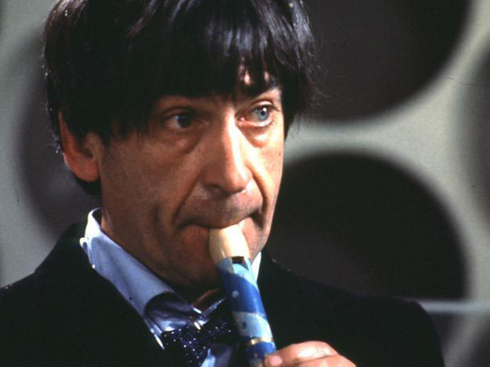

İkinci Doktor. Doctor Who'nun baş karakteri olan Doctor'un 2. enkarnasyonu'dur. 2. Doctor'u Patrick Troughton canlandırmıştır. 2. Doctor ilk olarak Power Of Dalek's'de görülmüştür. Son bölümü ise War Games'dır.
1. Doctor Tenth Planet bölümünde Siberadam'ları yendikten sonra rejenerasyon geçirir. 2. Doctor ilk zamanlar'da Ben'e Doctor olduğunu inandırmakta zorlanır. Fakat daha sonra Ben onun Doctor olduğunu anlar.
2. Doctor daha sonra Ben ve Polly dışında yanına 1746 İskoçyasın'da tanıştıkları Jamie Mccrimmon'uda alır. 2. Doctor yeni takımıyla birçok yeri görür. Underwater Menace bölümünde onları Atlantis'e götürür. Moonbase bölümünde Aya giderler. Orada Siberadamlar ile karşılaşırlar.
2. Doctor The Faceless One bölümünde Polly ve Ben'den ayrıldıktan sonra Jamie ile birlikte 1866 yılına gider. Ve orada Edward Waterfield ve Theodore Maxtible adında iki bilim-insanıyla karşılaşırlar. Burada İnsan Faktörü isimli bir çalışma yapmaktadırlar. Doctor ve Jamie Edward Waterfield'in kızı Victoria ile karşılaşırlar. Daha sonra Edward Waterfield ölür ve İnsan Faktörü'nü farkeden Dalekler onu kullanarak iç savaşı Dünya'ya taşırlar. Doctor bir savaştan sonra Dalekler'i yenmeyi başarır ve takıma Victoria'yı dahil eder.
2. Doctor Jamie ve Victoria ile birlikte bir arkeoloji takımı olan Telos'u ziyaret eder. Telos burada bir Siber mezarı aramaktadır. Takımdan biri olan Eric Klieg Siber Lideri'ni ve Siber'leri 500 yıllık uykusundan uyandırmıştır. Fakat Doctor ve Jamie onları durdurmayı başarır. 2. Doctor Siber'ler mezarlara dönerken tekrar çıkmalarını önlemek Siber'lerin Sembolik Mantığı'nı elektriklemiştir. (Tomb of the Cybermen)
Daha sonraki bölümler ise Dünya'da geçer. 2. Doctor Dünya'da Abonimable Snowmen bölümünde Büyük İstihbarat ve Robot Yeti ile karşılaşır. Ice Warriors bölümünde ise Buz Savaşçıları ile savaşır.
Web Of Fear bölümünde Doctor 2. kez Büyük İstihbarat ve Yeti ile karşılaşır. Ve bu bölümde Alistair Gordon Lethbridge Stewart ile ilk kez karşılaşır.
2. Doctor eski bir arkadaşı olan Savaş Şefi ile karşılaşır. Savaş Şefi Savaş Lordları'na bir uzay-zaman teknolojisi vermiştir. (SİDRAT) ve Savaş Lordları şimdi bu teknolojiyi kullanarak galaksiyi fethetmek istemektedirler. 2. Doctor doğru zamandaki askerleri yerlerine geri getirmeye çalışır. 2. Doctor böylece Zaman Lordları'na ihanet etmek zorunda kalır. Zaman Lordları 2. Doctor'u Dünya'ya 20. yüzyıla sürgün ederler. Ve ona zorla rejenerasyon geçirtirler. (War Games)
2. Doctor şakacı ve esprili bir insandır. Kolay kolay surat asmayan bir Doctor'dur. En zor durumlar'da bile hala şaka yapabilir. Ciddi olduğu durumlar çok azdır.
Doctor'un bu enkarnasyonun'da hızlı bir değişim olmuştur. İlk başlar'da Kaprisli iken daha sonra esprili bir kişiliğe bürünmüştür. 2. Doctor gerektiğinde acımasız olabiliyordu. Bu özelliği en çok Tomb of the Cybermen bölümünde Siberadamlar'ı mezara geri gönderirken mezar kapıları'nı ölümcül elektrikle mühürlemesinde kendini gösterir.
2. Doctor kendisi ile karşılaştığı durumlarda her zaman kendisinden sonraki enkarnasyonu ile kavga ederdi. Eğer 1. Doctor yanlarında olmazsa 2. Doctor'un kendisin'den sonraki enkarnasyonları ile birlikte çalışamayacağı bellidir çünkü onlar birbirlerinden çok farklıdırlar.
2. Doctor en fazla kendisiyle karşılaşan Doctor'dur. 1973'te 1. Doctor ve 3. Doctor ile karşılaşır. 1983'te 1. 3. 4. 5. Doctor'lar ile karşılaşır. 1986'da ise son olarak 6.Doctor ile karşılaşır.
2. Doctor Zaman Lordlar'ı ve Galiffrey ile bir psişik küp sayesinde iletişimkurabilirdi. 2. Doctor diplomasilerde daha ciddiydi ve o her zaman karşı tarafın kalbini kazanmak için hediye getirirdi.
2. Doctor Doctor Who hayranları içerisinde tanınan bir Doctor'dur. Ayrıca 1989'da Klasik Seri'nin son bölümüne kadar kullanılan Jenerik'te Doctor'un yüzü'nün bulunması 2. Doctor ile başlamıştır.
11. Doctor olarak Doctor Who'da rol alan Matt Smith'in favori Doctor'u 2. Doctor'dur. Bu yüzden 11. Doctor'un kıyafetleri ve pek çok özelliği 2. Doctor ile benzerlik gösterir.
Hakkımızda
Doctor Who adlı şuana kadar çekilen en uzun, İngiliz , bilim-kurgu dizisini takipçilerimize tanıtmayı ve açıklamayı amaçlıyoruz.